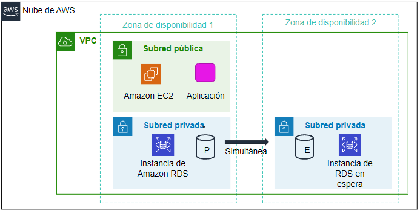
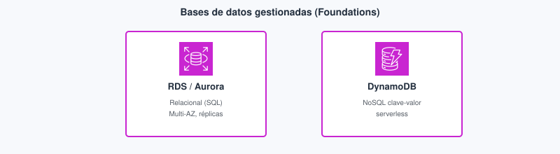
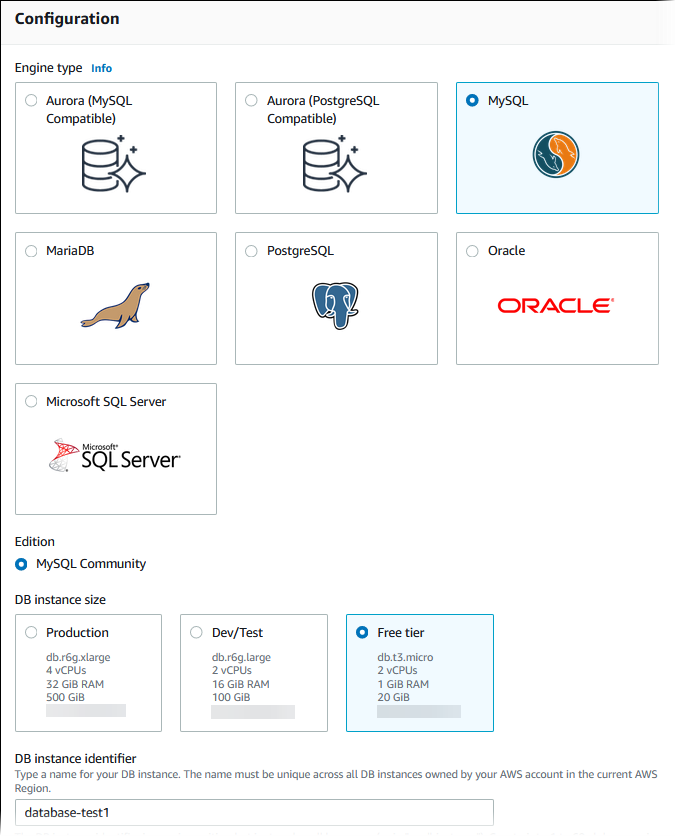
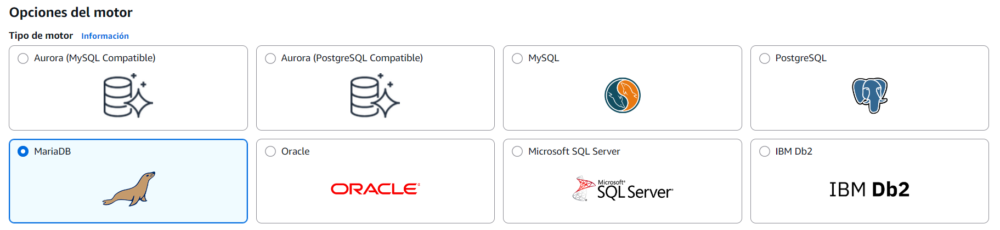
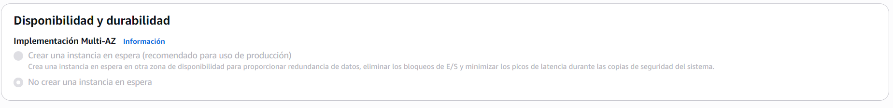
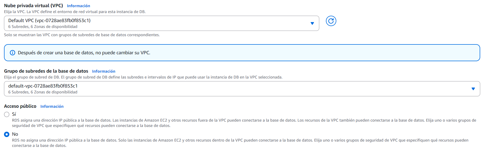
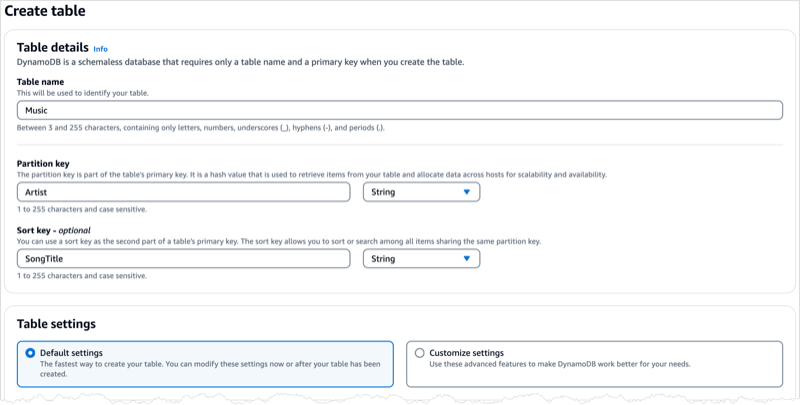
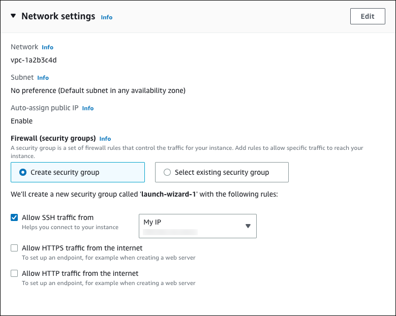
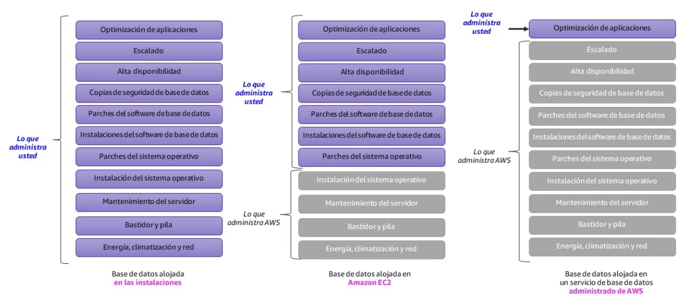
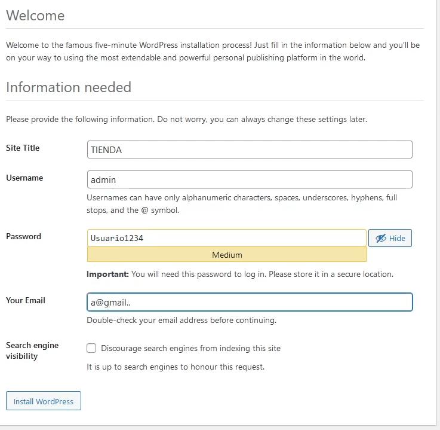

Tema 6. Bases de datos¶
Instalar MySQL en la misma EC2 (Elastic Compute Cloud, nube elástica de cómputo) que Express funciona en el aula y acopla fallo, actualizaciones y copia de seguridad: si cae la máquina, cae la API y la base de datos (BD). En la nube la pregunta de un proyecto de DAW es otra: ¿necesitas SQL (Structured Query Language, lenguaje de consulta estructurado) transaccional, un almacén de documentos, o analítica? Este tema corresponde al Módulo 8 de AWS Academy Cloud Foundations. Los términos clave están en el glosario.
Al empezar
Empieza por el cuestionario inicial. Distingue ya el almacenamiento de objetos (Tema 5) de los datos estructurados: aquí eliges motor y quién mantiene y actualiza ese motor.
Propuesta didáctica¶
RA4. Gestiona servicios de almacenamiento y bases de datos en la nube, seleccionando tecnologías adecuadas para casos específicos, y diseña arquitecturas escalables y resilientes utilizando herramientas de monitoreo y optimización para mejorar el rendimiento.
Criterios de evaluación (RA4)¶
- b) Se ha llevado a cabo la configuración y gestión de bases de datos en un entorno de nube.
- c) Se ha trabajado en la resolución de problemas prácticos sobre almacenamiento y bases de datos.
Contenidos¶
- BD en EC2 frente a RDS / Aurora (quién mantiene y actualiza el motor).
- Relacional: Multi-AZ frente a réplica de lectura.
- DynamoDB, ElastiCache, Redshift: cuándo no es RDS.
- DMS / SCT: migración de datos (enlace con las 7 R del Tema 1).
Programación de aula (orientativa)¶
| Quincena | En tutoría | Trabajo autónomo / evidencias |
|---|---|---|
| Q8 | RDS Multi-AZ frente a réplica + DynamoDB | PR601; Autocheck del tema |
Cuestionario inicial¶
Responde con lo que sepas
- MySQL en la misma EC2 que Express frente a RDS: ¿quién mantiene y actualiza el motor en cada caso?
- ¿Multi-AZ responde sobre todo a la conmutación por error de escritura o a escalar consultas de informes?
- ¿Para qué sirve una réplica de lectura que Multi-AZ no cubre igual?
- ¿Cuándo tendría sentido DynamoDB además de un checkout SQL, y cuándo es un error sustituirlo «por moda»?
- ¿Por qué abrir 3306 al mundo desde RDS es una mala práctica aunque «así conectas el cliente SQL del portátil»?
Este cuestionario es solo para ti: te ayuda a ver qué dominas ya y qué te falta antes o mientras lees el tema. No se entrega en Aules; respóndelo con lo que sepas y, cuando quieras contrastar, abre el bloque Soluciones (autoevaluación) debajo o el índice en Soluciones.
Soluciones (autoevaluación)
-
MySQL en EC2: tú mantienes y actualizas el motor (y aplicas los parches del SO, sistema operativo). En RDS, AWS mantiene y actualiza el motor.
-
Multi-AZ responde sobre todo a la conmutación por error (failover) de la escritura (otra AZ): si cae la instancia principal, RDS pasa a la de reserva. No escala SELECT de informes.
-
La réplica de lectura escala lecturas / consultas de informes de forma asíncrona; no es el mismo mecanismo que la conmutación Multi-AZ.
-
Además: por ejemplo un catálogo o sesión NoSQL junto a un checkout SQL. Error: tirar el dominio relacional y transaccional «porque DynamoDB escala» sin necesidad.
-
Expone el motor a internet entero; el SG (grupo de seguridad, security group) debe aceptar el SG de la API (o un servidor bastión: una EC2 en subred pública que solo sirve de puerta de entrada por SSH a la red privada), no
0.0.0.0/0en 3306.
Bloque Foundations (Módulo 8)¶
¿Gestionada o en la máquina virtual?¶
Un SGBD (sistema de gestión de bases de datos) en EC2 te da control total: tú diseñas la alta disponibilidad (HA, high availability), aplicas los parches del SO, mantienes y actualizas el motor y montas las copias. Amazon RDS (Relational Database Service, servicio de bases de datos relacionales) es una base de datos relacional gestionada: AWS asume mantener y actualizar el motor, las instantáneas y el despliegue Multi-AZ opcional. El examen CLF (AWS Certified Cloud Practitioner, CLF-C02) y una app de clase bien hecha premian el servicio gestionado salvo motor raro o licencia que lo impida. Para un desarrollador web: sigues hablando SQL; dejas de encargarte del servidor donde corre el motor. El rol de DBA (database administrator, administrador de bases de datos) del SO y del host deja de ser tu día a día.

Por qué RDS y no MySQL «a pelo» en EC2
Puedes instalar el SGBD en EC2, sí. Con RDS te ahorras mantener y actualizar el motor, buena parte de las copias y de la HA. A cambio, menos control del SO. Por seguridad suele ir en subredes privadas y solo acepta el SG de la API.

Al crear RDS, mira motor, plantilla (Free tier / Dev) e identificador antes de pulsar Create: ahí se decide buena parte de la factura del lab.

Cuando MySQL vive en la misma EC2 que Express, un terminate se lleva API y datos, y el parche del SO afecta a ambos a la vez. En un buen diseño la API corre en cómputo (EC2, contenedor o función) y la BD en RDS dentro de una subred privada: las instantáneas y Multi-AZ los activa el servicio gestionado, pero tú sigues diseñando el esquema, los usuarios de la base y el SG.
| Examen CLF | Clase DAW / empresa |
|---|---|
| Hay que distinguir MySQL en EC2 de RDS gestionado. | En el proyecto intermodular la BD no debería vivir en la misma máquina que la API si puedes evitarlo. |
| En RDS, AWS mantiene y actualiza el motor; tú gestionas datos y accesos. | En el .md del lab explica quién aplica los parches del SO y quién mantiene el motor. |
| La BD gestionada suele ir en subred privada. | El puerto del motor solo acepta el SG de la aplicación. |
Relacionales: RDS y Aurora¶
Qué es en este caso — RDS. Una instancia de BD en RDS es el recurso gestionado que ejecuta un motor relacional (MySQL, PostgreSQL, MariaDB, SQL Server, Oracle…). Eliges la clase de instancia (una combinación fija de CPU y memoria que eliges de una lista), el almacenamiento, la VPC (Virtual Private Cloud, nube virtual privada), el grupo de subredes de BD (DB subnet group) y el SG. El endpoint es el nombre DNS (Domain Name System, sistema de nombres de dominio) al que se conecta la aplicación: no es la IP de tu portátil.
En la práctica — RDS. En el proyecto de DAW la API (interfaz de programación de aplicaciones) Node o PHP abre una conexión al endpoint (JDBC, DATABASE_URL, Sequelize u otro ORM —object-relational mapper, mapeador objeto-relacional—). El esquema, las migraciones de tablas y los usuarios de la app siguen siendo tuyos. AWS mantiene y actualiza el motor según la ventana de mantenimiento; tú no entras por SSH (Secure Shell, acceso remoto cifrado) al host de la BD para aplicar actualizaciones del motor. Si cambias la clase de instancia o el almacenamiento, lo haces desde la consola o la API de AWS, no reinstalando MySQL a mano en un disco EBS.
El grupo de subredes de BD agrupa subredes (casi siempre privadas) en al menos dos AZ. RDS elige en qué subredes coloca el primario y, si hay Multi-AZ, la instancia de reserva (standby). Si metes solo subredes públicas «porque así conecto desde casa», estás diseñando al revés: la app debería vivir cerca de la BD en la VPC, y tú acercarte con un servidor bastión o VPN (red privada virtual, virtual private network) cuando haga falta administrar.
Qué es en este caso — Aurora. Amazon Aurora es un motor relacional compatible con MySQL o PostgreSQL, con almacenamiento distribuido y réplicas pensadas para más margen de HA y rendimiento dentro del ecosistema RDS.
En la práctica — Aurora. Nivel Foundations: «RDS con más margen de HA y rendimiento». Si tu framework ya habla PostgreSQL, Aurora compatible con PostgreSQL encaja sin reescribir el dominio: eso es replatform (cambiar de plataforma manteniendo el modelo) ligero, no refactor (rediseñar la aplicación). En el lab del Módulo 8 trabajas con RDS for MySQL; Aurora aparece sobre todo en el discurso del CLF y en ampliaciones.
Multi-AZ frente a réplica de lectura¶
Dos mecanismos que se confunden y que el CLF premia distinguir.
Multi-AZ (Multi–Availability Zone, varias zonas de disponibilidad) replica de forma síncrona hacia una instancia de reserva en otra AZ. Si falla la AZ primaria, hay conmutación: el endpoint apunta a la instancia de reserva. La aplicación suele reintentar la conexión al mismo nombre DNS; no reescribes el SQL. Responde a disponibilidad de la escritura, no a acelerar SELECT de informes. Cuesta más que una sola AZ porque hay capacidad reservada en la segunda zona; en el lab lo activas porque el enunciado lo pide y porque quieres ver el patrón, no porque «más caro = mejor nota» sin más.
Una réplica de lectura (read replica) copia de forma asíncrona para repartir consultas de solo lectura. Escala consultas de informes o paneles; puede ir un poco por detrás del primario (retraso de replicación). No es el mismo mecanismo que la conmutación Multi-AZ: si caes el primario, una réplica no se promociona sola salvo que configures y ejecutes ese proceso aparte.

Multi-AZ frente a réplica de lectura
- Multi-AZ: escritura síncrona a la instancia de reserva; ante fallo, esa instancia toma el relevo (comercio, finanzas…).
- Réplica de lectura: replicación asíncrona; escala SELECT / consultas de informes; la conmutación manual no es el mismo mecanismo.

Instantáneas y red¶
Las instantáneas automáticas las programa RDS (ventana de copia); las manuales las lanzas tú antes de un cambio arriesgado. Sirven para recuperar un punto en el tiempo; no sustituyen un buen diseño de esquema ni el control de quién puede conectar.
El SG del motor no se abre a 0.0.0.0/0. La API en subred privada habla con RDS; no expones 3306 a internet «para DBeaver desde casa» si hay alternativas (servidor bastión, VPN).

| Examen CLF | Clase DAW / empresa |
|---|---|
| Multi-AZ sirve para la conmutación por error de la escritura. | En el lab del Módulo 8 activas Multi-AZ cuando el enunciado lo pide y lo explicas en el .md. |
| La réplica de lectura escala SELECT; no sustituye a Multi-AZ. | Si el cuello de botella son las consultas de informes, valora una réplica; si es la caída de una AZ, Multi-AZ. |
| El puerto del motor no va abierto a internet. | El SG de RDS solo acepta el SG de la aplicación web. |
NoSQL y analítica¶
NoSQL agrupa modelos que no se centran en tablas relacionales con claves foráneas (FK) clásicas (documentos, clave-valor, grafos…). No todo dato de una app web es «tablas normalizadas». A veces el dominio es un documento JSON con picos imprevisibles; a veces necesitas caché; a veces informes analíticos. La tabla sitúa servicios: no elijas DynamoDB solo porque «suena a nube».
En un mismo producto puedes combinar: RDS para pedidos (transacciones, stock, integridad referencial), ElastiCache para sesiones calientes, S3 para facturas PDF. Eso no es «multicloud»: es usar el servicio adecuado por patrón de acceso. El examen premia reconocer el patrón; el proyecto de DAW premia no meterlo todo en una sola EC2 con un MySQL olvidado en el disco raíz.
| Servicio | Modelo | Caso del proyecto de DAW |
|---|---|---|
| DynamoDB | Almacén NoSQL clave-valor o de documentos, sin servidores que administres. | Encaja en sesiones, un catálogo simple o datos con picos imprevisibles. |
| ElastiCache | Caché en memoria gestionada (Redis o Memcached). | Acelera lecturas calientes; no sustituye a la base de datos de registro. |
| Redshift | Almacén de datos columnar para analítica. | Sirve para informes agregados; no es el OLTP del checkout de la tienda. |
| DocumentDB | Compatible con la API de documentos de MongoDB. | Reconócelo cuando el escenario pide documentos tipo MongoDB gestionados. |
| Neptune | Base de datos de grafos gestionada. | Reconócelo cuando el escenario describe relaciones tipo grafo (recomendaciones, redes). |
| Keyspaces | Compatible con Apache Cassandra. | Reconócelo cuando el escenario pide un almacén tipo Cassandra gestionado. |
Qué es en este caso — DynamoDB. Servicio NoSQL gestionado: trabajas con una tabla de elementos (items), cada uno identificado por una clave de partición (partition key) y, si hace falta, una clave de ordenación (sort key). No es «MySQL más rápido».
En la práctica — DynamoDB. Encaja cuando el acceso es por clave conocida y el modelo no exige joins complejos. Al crear una tabla, lo primero que pide la consola es la partition key (y opcionalmente sort key). Sin eso no hay tabla: no es un CREATE TABLE SQL libre. Piensa el acceso antes de modelar: «dado el userId, dame la sesión» encaja; «dame todos los pedidos del mes pasado con el nombre del cliente y el stock» suele ser territorio SQL o un diseño NoSQL mucho más trabajado (y fácil de hacer mal en Foundations).

Cuándo no usar DynamoDB. Pedidos con joins y transacciones clásicas, informes ad hoc con SQL libre, o un equipo que solo conoce Sequelize/JPA sobre tablas normalizadas. Forzar NoSQL «porque es serverless» suele acabar en un modelo a medias y consultas dolorosas.
Qué es en este caso — ElastiCache. Caché en memoria (Redis o Memcached gestionados) delante de la BD o de la API.
En la práctica — ElastiCache. Sirve para sesiones o resultados calientes. Si apagas la caché, los datos duraderos deben seguir en RDS (o en el almacén que hayas elegido como sistema de registro).
Qué es en este caso — Redshift. Almacén de datos (data warehouse) columnar para analítica.
En la práctica — Redshift. Encaja en informes y agregaciones grandes. No es la BD del checkout de la tienda (OLTP, Online Transaction Processing, procesamiento de transacciones en línea).
Migración¶
DMS (Database Migration Service, servicio de migración de bases de datos) replica datos entre orígenes y destinos. SCT (Schema Conversion Tool, herramienta de conversión de esquemas) ayuda a convertir esquemas cuando cambias de motor. Encaja con las 7 R del Tema 1:
- Replatform: mueves la BD a un servicio gestionado (por ejemplo Oracle en tus propias instalaciones hacia Aurora) manteniendo el modelo de datos con cambios acotados.
- Refactor: rediseñas la aplicación o el modelo (por ejemplo pasar parte del dominio a DynamoDB).
En Foundations no montas un proyecto DMS completo: reconoces la herramienta cuando el escenario es «mover datos con poco tiempo de parada (downtime)» frente a «rediseñar la app». El CLF no te pide el asistente paso a paso; te pide elegir DMS/SCT frente a copiar un dump a mano sin herramienta de migración.
Conectar la aplicación con la base de datos¶
La URL JDBC / DATABASE_URL apunta al endpoint de RDS, no a una base en tu portátil. El host suele parecerse a xxx.region.rds.amazonaws.com; el puerto es el del motor (3306 en MySQL). El SG de RDS acepta el SG de la API (o un servidor bastión), no tu IP pública del instituto de forma permanente: las IP del aula cambian y, además, dejan el hábito de abrir el motor a trozos de internet.
Los secretos (usuario, contraseña, cadena completa) no van al repositorio ni al PR601.md público. En el discurso Practitioner aparecen Parameter Store y Secrets Manager; en el lab, anótalos fuera del entregable y en el .md deja constancia de que la app apunta al endpoint sin pegar la contraseña.
En el asistente verás la opción de conectar EC2 con RDS ajustando los SG: úsala como lista de comprobación, no como excusa para abrir 3306 al mundo. Si la web «no conecta», mira en este orden: ¿misma VPC?, ¿grupo de subredes correcto?, ¿SG de la BD admite el SG de la EC2?, ¿la app usa el endpoint y no localhost?, ¿la instancia RDS está Available?

Si usas un ORM (Sequelize, JPA, Entity Framework), Multi-AZ no cambia tu código SQL: cambia la disponibilidad del endpoint. Las réplicas de lectura sí pueden exigir una cadena de conexión de solo lectura para consultas de informes.
Errores frecuentes (datos)¶
Si abres 3306 o 5432 a 0.0.0.0/0 «para probar desde el portátil», el motor queda expuesto a todo internet: escaneo, fuerza bruta e incidentes. En su lugar deja que el SG de RDS acepte solo el SG de la aplicación web (o un servidor bastión) y usa VPN o túnel cuando necesites un cliente SQL desde casa.
Confundir Multi-AZ con réplica de lectura lleva a activar lo uno esperando lo otro: Multi-AZ no acelera los SELECT de informes, y una réplica no es el mecanismo principal de conmutación. En el .md escribe para qué sirve cada uno con el caso de tu API.
Dejar la instancia RDS del lab encendida tras la entrega sigue facturando almacenamiento y horas de instancia aunque nadie conecte. Al cerrar, elimina la instancia y las instantáneas de práctica según el enunciado, y deja captura de limpieza.
Pegar la contraseña del usuario master en el README o en el PR601.md público filtra el secreto del lab (y el hábito pasa al repo del proyecto intermodular). Anota credenciales fuera del entregable; en el .md basta el endpoint y la explicación de red.
Relación con otros temas¶
El disco y los objetos del Tema 5 no sustituyen una base transaccional: S3 guarda ficheros; aquí eliges motor y quién mantiene y actualiza ese motor. Un dump de MySQL en un bucket es un objeto; la BD en marcha que atiende el checkout es otra cosa. La API sigue viviendo en el cómputo del Tema 4, idealmente en subred privada (Tema 3). IAM (Tema 2) decide quién puede crear instancias RDS o asumir roles; el SG decide qué tráfico TCP (Transmission Control Protocol, protocolo de control de transmisión) llega al puerto del motor. Multi-AZ y réplicas se entienden mejor cuando el Tema 7 pide justificar el equilibrio entre disponibilidad, coste y complejidad: no actives Multi-AZ «por costumbre» en un lab de media hora si el enunciado no lo pide —en el Ejercicio de laboratorio 5 sí lo pide, y entonces lo documentas.
El lab del Módulo 8: Ejercicio de laboratorio 5 - Creación de un servidor de bases de datos¶
En tu clase de Cloud Foundations, el lab del Módulo 8 se llama Ejercicio de laboratorio 5 - Creación de un servidor de bases de datos. Trabajas en la región que indique el lab. La instancia EC2 con la aplicación web —una agenda de contactos (Address Book)— ya viene creada en el lab. Tu trabajo es montar la BD gestionada y enlazarla a esa agenda.
Primero creas un grupo de seguridad para la BD cuyas reglas de entrada admitan el puerto del motor solo desde el SG de la aplicación web (la EC2 de la agenda). Así la app puede hablar con MySQL y el resto de internet no.
Después creas un grupo de subredes de BD (DB subnet group) con subredes privadas en dos AZ. RDS necesita al menos dos subredes en AZ distintas para desplegar Multi-AZ; sin ese grupo, el asistente no puede colocar el primario y la instancia de reserva como toca.
Luego lanzas una instancia de Amazon RDS for MySQL con Multi-AZ activado, clase y almacenamiento según el enunciado, acceso público desactivado y el SG de la BD que acabas de definir. Esperas a que quede Available y anotas el endpoint (sin pegar la contraseña en el entregable).
Por último abres el formulario de configuración de la propia agenda en la EC2 e introduces el endpoint, el nombre de la base de datos, el usuario y la contraseña (los valores concretos los marca el enunciado; no los copies al .md). Compruebas que la agenda guarda y muestra contactos: eso demuestra que la aplicación usa RDS y no un MySQL local en el disco de la EC2. No dejes secretos en capturas del entregable.
Respecto al mapa del proyecto de DAW (API en cómputo, BD gestionada, fotos en S3), este lab practica RDS, Multi-AZ, grupo de subredes y SG. Simplifica el resto del producto (no montas DynamoDB ni Redshift). En PR601 deja claro qué es IaaS (Infrastructure as a Service, infraestructura como servicio: la EC2, donde tú aplicas los parches del SO) y qué es gestionado (RDS, donde AWS mantiene y actualiza el motor), y al terminar elimina la instancia RDS: deja una captura que demuestre que has eliminado los recursos.
Bloque Ampliación Practitioner (CLF-C02)¶
Aquí el examen contrapone base gestionada frente a MySQL en la EC2, relacional frente a NoSQL, y Multi-AZ frente a réplica de lectura: no son sinónimos. DMS y SCT aparecen cuando el escenario describe migración con poco tiempo de parada frente a un rediseño completo.
Para el CLF
Multi-AZ responde a la conmutación de la escritura; la réplica de lectura escala SELECT o consultas de informes. DynamoDB puede ir además de un checkout SQL si el dominio sigue siendo relacional; no lo sustituyas «por moda». Ampliación y autocheck certificación en Certificación § Tema 6.
Videotutorial (Practitioner / NoSQL). DynamoDB (~10 min). Vídeo: Profe Santos Cloud (YouTube).
Videotutorial¶
Principal (Foundations). ATTA AWS Academy RDS 05 (~19 min).
Vídeo: Profe Santos Cloud (YouTube). Qué mirar: clase pequeña, SG del motor y eliminar la instancia al acabar.
Extra (opcional). RDSPrivateSubnet EC2Linux (~21 min) — RDS en privada con EC2; refuerza el Tema 3. Vídeo: Profe Santos Cloud (YouTube).
Extra. WordPress con RDS — app web en EC2 y base MySQL gestionada en RDS.


Actividad / práctica¶
PR601 — RDS mínimo¶
- PR601. (RA4 // b, c // PR 0–10). Completas el lab Academy del Módulo 8 (Ejercicio de laboratorio 5 - Creación de un servidor de bases de datos): la agenda (Address Book) ya está en una EC2; tú creas SG de la BD, grupo de subredes, RDS for MySQL Multi-AZ, configuras el formulario de la agenda, dejas secretos fuera del markdown y limpias al acabar.
Tareas: crea el SG de la BD (puerto del motor solo desde el SG de la agenda); crea el grupo de subredes de BD en subredes privadas de dos AZ; lanza RDS for MySQL con Multi-AZ según el enunciado; introduce endpoint, nombre de BD, usuario y contraseña en el formulario de la agenda; comprueba que guarda y muestra contactos; documenta IaaS (EC2) frente a gestionado (RDS); deja secretos fuera del .md; elimina la instancia RDS (e instantáneas de lab si el enunciado lo pide) y deja una captura que demuestre que has eliminado los recursos.
Entrega: según Cómo entregar las prácticas — fichero PR601.md (o ZIP + img/ si hay capturas).
Guía de apoyo (no sustituye el enunciado): Soluciones · PR601.
| Criterio | Descripción | Puntos |
|---|---|---|
| Lab RDS (SG, subredes, Multi-AZ) | Flujo del Ejercicio de laboratorio 5 | 0–3 |
| Seguridad de red | SG sin motor abierto al mundo | 0–3 |
| Secretos y claridad | Fuera del markdown; IaaS frente a gestionado | 0–2 |
| Limpieza | Captura que demuestre que has eliminado los recursos | 0–2 |
| Total | /10 |
Autocheck del tema¶
Comprueba bases de datos de este tema. CLF: Certificación § Tema 6.
- Multi-AZ en RDS sirve sobre todo para…
a) acelerar SELECT de informes · b) conmutación si cae una AZ · c) sustituir copias de seguridad - Checkout con transacciones SQL: primera hipótesis…
a) DynamoDB · b) RDS/Aurora · c) Redshift - ¿Quién mantiene y actualiza el motor en RDS?
- V/F. Redshift es la opción típica de OLTP de la tienda online.
- Empareja: DynamoDB · ElastiCache · réplica de lectura con: (a) NoSQL clave-valor · (b) caché en memoria · (c) escala de lectura
Soluciones
-
b.
-
b.
-
AWS (servicio gestionado); tú esquemas, datos y accesos.
-
Falso — Redshift es analítica / warehouse; OLTP → RDS/Aurora.
-
DynamoDB encaja con (a) NoSQL clave-valor; ElastiCache, con (b) caché en memoria; la réplica de lectura, con (c) escala de lectura.
Glosario¶
RDS Relational Database Service (servicio de bases de datos relacionales): bases relacionales gestionadas (MySQL, PostgreSQL…). AWS mantiene y actualiza el motor y la infraestructura; tú gestionas esquemas, datos y accesos.
instancia de BD Recurso RDS que ejecuta un motor concreto con una clase, almacenamiento y red asociados.
clase de instancia Combinación fija de CPU y memoria de la instancia de BD que eliges de una lista (p. ej. clases pequeñas en labs).
endpoint RDS Nombre DNS al que se conecta la aplicación para hablar con la instancia de BD.
grupo de subredes de BD DB subnet group: conjunto de subredes (en AZ distintas) donde RDS puede colocar la instancia y la instancia de reserva Multi-AZ.
Multi-AZ Despliegue en más de una zona de disponibilidad con conmutación por error de escritura. No sustituye a las réplicas de lectura ni acelera por sí solo los SELECT de informes.
read replica Réplica de lectura: copia de solo lectura para repartir consultas SELECT e informes. No es el mecanismo principal de conmutación Multi-AZ.
instantánea RDS Copia de la BD en un momento (automática o manual) para recuperación o restauración.
Aurora Motor relacional de AWS compatible con MySQL o PostgreSQL, con almacenamiento distribuido y más margen de HA dentro de RDS.
DynamoDB Base NoSQL gestionada (clave-valor / documentos), serverless y de baja latencia. No es un sustituto automático de SQL transaccional con joins y claves foráneas.
tabla DynamoDB Contenedor de elementos en DynamoDB; se define al crear la tabla con su clave de partición.
elemento DynamoDB Item: registro individual en una tabla DynamoDB.
clave de partición Partition key: atributo obligatorio que reparte los elementos entre particiones; sin ella no hay tabla.
ElastiCache Caché en memoria gestionada (Redis / Memcached). Acelera lecturas; no sustituye a la BD de registro.
Redshift Almacén de datos columnar para analítica e informes, no para el OLTP de la tienda.
OLTP Online Transaction Processing (procesamiento de transacciones en línea): cargas del día a día (pedidos, stock). Se distingue de la analítica.
DMS Database Migration Service (servicio de migración de bases de datos): replica datos entre orígenes y destinos con poco tiempo de parada cuando el escenario lo permite.
replatform Migración que cambia de plataforma (p. ej. SGBD en servidor propio hacia RDS/Aurora) manteniendo el modelo con cambios acotados.
refactor Migración que rediseña la aplicación o el modelo de datos (más cambio que un replatform).